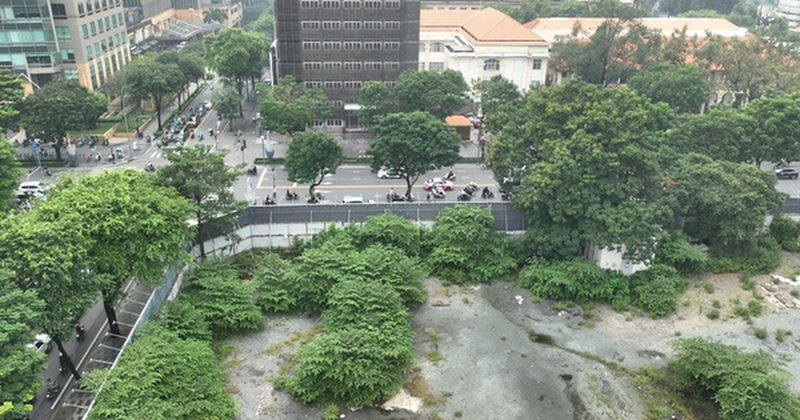

Tong hop tin tuc - 2026-04-18
TIN MỚI Kiến nghị nhóm vấn đề liên quan đến Thuế, Công ty TNHH Thương mại và Dịch vụ TSG (phường Khương Đình) và Công ty Cổ phần sản xuất nhựa Duy Tân - Chi nhánh Hà Nội (phường Bồ Đề) nêu khó khăn tr
Ngoại trưởng Iran Abbas Araghchi ngày 17/4 đăng trên mạng xã hội X rằng eo biển Hormuz đã "mở cửa hoàn toàn" cho tàu thương mại, khiến giá dầu Brent giảm khoảng 10 USD, xuống mức 89 USD mỗi thùng chỉ
Tổng thống Mỹ Donald Trump - Ảnh: REUTERS Theo Hãng tin Reuters ngày 18-4, phát biểu trên chuyên cơ Air Force One, Tổng thống Mỹ Donald Trump nói "mọi thứ có vẻ đang diễn ra rất tốt với Iran", nhưng t

TIN MỚI Ngày 18-4, tại kỳ họp thứ hai, HĐND TPHCM khóa XI, nhiệm kỳ 2026-2031 đã thông qua dự thảo nghị quyết về danh mục quỹ đất dự kiến thanh toán cho nhà đầu tư thực hiện các dự án BT (xây dựng - c
Ngày 18/4, Công an tỉnh Đồng Nai cho biết, Phòng Quản lý xuất nhập cảnh đã phối hợp với các đơn vị chức năng liên quan tổ chức trục xuất 47 người nước ngoài do vi phạm các quy định về cư trú tại Việt
Ngày 6/4, bà Jia ở thành phố Nghĩa Ô, tỉnh Chiết Giang đến kiểm tra và định đổi mật khẩu cửa phòng của một khách thuê nam ngoài 40 tuổi. Người này đang nợ 5.000 tệ (khoảng 17,5 triệu đồng) tiền nhà nê
Nhà nghiên cứu Nguyễn Đình Tư (áo dài) dự lễ khai mạc Ngày Sách và văn hóa đọc Việt Nam - Ảnh: VĂN TRUNG Sáng 18-4, Ngày Sách và văn hóa đọc Việt Nam lần thứ 5 năm 2026 khai mạc tại Đường sách TP.HCM.
Tại hội thảo với chủ đề "Hộ kinh doanh: Minh bạch dòng tiền, mở rộng cơ hội kinh doanh" do báo Tuổi Trẻ, Cục Thuế (Bộ Tài chính) cùng Thuế TP.HCM tổ chức chiều 17-4, các chuyên gia, nhà quản lý thuế đ
TIN MỚI Xung đột Trung Đông đang đe dọa gây ra cuộc khủng hoảng thiếu nhiên liệu máy bay trên thế giới vào thời điểm mùa du lịch hè sắp bắt đầu. Giám đốc Điều hành Cơ quan Năng lượng quốc tế (IEA) Fat
BYD phát hành hơn 200 bản cập nhật phần mềm trong một năm Theo Hùng Cường | 18/04/2026 12:22 PM | Công nghệ Theo dõi Cafebiz.vn trên Việc tung ra hơn 200 bản cập nhật qua mạng trong năm qua giúp BYD d
Kỳ thủ trẻ Đầu Khương Duy sáng cửa giành chuẩn đại kiện tướng thứ 2 - Ảnh: bangkokchess Kỳ thủ Đầu Khương Duy hiện đang dẫn đầu Giải Bangkok Chess Club Open 2026 với phong độ cực kỳ ấn tượng. Sau 7 vò
Chim Yến mang lại giá trị kinh tế cao, nhưng đang bị săn bắt trái phép - Ảnh minh họa Ngày 18-4, Đỗ Tâm Hiển, Phó chủ tịch UBND tỉnh Quảng Ngãi ký, ban hành văn bản yêu cầu các sở, ng
Tổng thống Pháp Emmanuel Macron ngày 17/4 chào đón Thủ tướng Đức Friedrich Merz, Thủ tướng Anh Keir Starmer và Thủ tướng Italy Giorgia Meloni tới Paris dự hội nghị thảo luận về biện pháp triển khai lự
Pháo hoa phun viên - Ảnh: TTO Bộ trưởng Bộ Công an Lương Tam Quang đã ký Quyết định 1523 ngày 26-3-2026 công bố thủ tục hành chính mới ban hành, thủ tục hành chính được sửa đổi, bổ sung và bãi bỏ tron
Những người dân có hộ khẩu cư trú tại 19 xã, phường thuộc khu vực An toàn khu cách mạng sẽ được cấp thẻ bảo hiểm y tế miễn phí - Ảnh: QUANG ĐỊNH Tại TP.HCM, người dân tại 19 xã, phường thuộc khu vực A
Trước đó, ngày 8/4, Phòng Cảnh sát hình sự tiếp nhận tin báo của chị Đ.N.T. (SN 2004) tố cáo bị Lê Đức Anh thực hiện hành vi quan hệ tình dục trái ý muốn và chiếm đoạt tài sản tại nơi ở của đối tượng.
Gửi bình luận Bình luận ( 0 ) Hiện chưa có bình luận nào, hãy là người đầu tiên bình luận Xem thêm bình luận